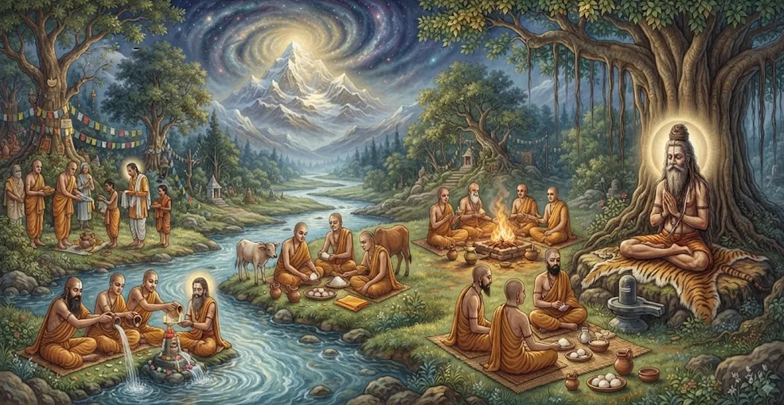

यतियों के लिए बारहवें दिन का संस्कार
कैलाश संहिता का तेईसवां अध्याय पवित्र बारहवें दिन के स्मारक समारोहों, अंतिम संस्कार संस्कारों और दिवंगत यति के लिए किए गए मुक्ति प्रोटोकॉल की रूपरेखा देता है।
ऋषि सुता ने पोस्टमार्टम चक्र को सील करने और भगवान शिव के साथ गुरु के स्थायी मिलन को सुरक्षित करने के लिए आवश्यक अंतिम अनुष्ठानों का विवरण दिया।
यह अध्याय मठवासी स्मारक अनुष्ठानों को अनुग्रह और भक्ति के साथ संपन्न करने के लिए आवश्यक मार्गदर्शन प्रदान करता है।
अध्याय 23 की मुख्य बातें
बारहवें दिन का प्रोटोकॉल
बारहवें दिन किए जाने वाले अंतिम अनुष्ठानों और चढ़ावे की पड़ताल करता है।
आत्मा मुक्ति
पोस्टमार्टम चक्र की सीलिंग और कैलाश में स्थायी विलय का विवरण।
दावत का समापन
तपस्वियों, ब्राह्मणों और आध्यात्मिक साधकों के अंतिम भोजन की रूपरेखा।
परम शिव पूजा
अंतिम संस्कार को सीधे भगवान शिव की परम कृपा से जोड़ता है।
शिष्य समापन
भावनात्मक समापन और आध्यात्मिक दृढ़ता प्राप्त करने में शिष्यों का मार्गदर्शन करता है।
संहिता परिवर्तन
वायवीय संहिता में खोजे गए व्यापक अवलोकनों के लिए साधक को तैयार करता है।
इस अध्याय में मुख्य विषय
बारहवें दिन का महत्व
ऋषि सूता बताते हैं कि बारहवां दिन यति के लिए पोस्टमार्टम अनुष्ठानों के भव्य समापन का प्रतीक है, जो परिवर्तन कालीन चक्र को सील करता है और शाश्वत शांति की स्थापना करता है।
यह वह दिन है जब शोक पूरी तरह से गुरु की मुक्ति के आध्यात्मिक उत्सव में बदल जाता है।
अंतिम शिव पूजा और समापन आहुति
शिष्य भगवान शिव की परम पूजा करते हैं, अनुष्ठान क्रम को बंद करने के लिए विशेष प्रार्थना, पवित्र पत्ते और प्रसाद चढ़ाते हैं।
यह अंतिम पूजा दिवंगत आत्मा और सर्वोच्च चेतना के बीच दिव्य संबंध को सील कर देती है।
तपस्वियों एवं ब्राह्मणों के भोज का समापन
स्मारक अवधि के धर्मार्थ दायित्वों को पूरा करने के लिए आने वाले तपस्वियों, आध्यात्मिक विद्वानों और ब्राह्मणों को एक भव्य दावत दी जाती है।
सामुदायिक भोजन का यह कार्य यति की यात्रा के लिए समर्पित अत्यधिक आध्यात्मिक योग्यता उत्पन्न करता है।
आत्मा की मुक्ति (मुक्ति) का एहसास
सभी बारह दिनों के संस्कारों के सफल निष्पादन के माध्यम से, यति की आत्मा पुनर्जन्म से मुक्त होकर, कैलास के सर्वोच्च निवास में पूरी तरह से स्थापित हो जाती है।
शिष्य को अपने गुरु की सच्ची श्रेष्ठता का एहसास होता है।
अंतिम आशीर्वाद और धर्मार्थ उपहार
वरिष्ठ आध्यात्मिक नेताओं के हार्दिक आशीर्वाद के साथ, योग्य प्राप्तकर्ताओं को उपहार, पवित्र ग्रंथ और आवश्यक प्रावधान वितरित किए जाते हैं।
इस दिन दान करने से परिवर्तन के शेष बचे कर्म ऋणों से मुक्ति मिल जाती है।
कैलाश संहिता अनुष्ठान प्रोटोकॉल का निष्कर्ष
अध्याय 23 के साथ, कैलाश संहिता में विस्तृत अंतिम संस्कार और पोस्टमार्टम प्रोटोकॉल अपने पवित्र निष्कर्ष पर पहुंचते हैं।
उन्नत त्यागियों के सम्मान के लिए शिष्यों के पास एक संपूर्ण मैनुअल बचा हुआ है।
वायवीय संहिता में एक नज़र
कैलाश संहिता के अनुष्ठान निर्देशों का समापन करने के बाद, पाठ पाठक को वायवीय संहिता अवलोकन के लिए तैयार करता है।
यह परिवर्तन शिक्षाओं को शिव पुराण के अगले प्रमुख खंड में जोड़ता है।
अध्याय 23 की मुख्य शिक्षाएँ
अंतिम समापन
पूर्ण आध्यात्मिक पूर्णता के साथ पोस्टमार्टम चक्र को सील कर देता है।
शाश्वत स्वतंत्रता
कैलाश में यति की स्थायी स्थापना सुनिश्चित करता है।
मेधावी पर्व
अन्न-दान का समापन स्मारक दायित्वों को अंतिम रूप देता है।
परम भक्ति
भगवान शिव के प्रति सर्वोच्च समर्पण में शिष्यों का लंगर।
भावनात्मक शांति
दुख को स्थायी आध्यात्मिक स्मरण में बदल देता है।
संहिता निष्कर्ष
वायवीय संहिता में परिवर्तन से पहले कैलास संहिता का समापन किया गया।
आध्यात्मिक चिंतन
बारहवां दिन पवित्र कर्तव्य की पराकाष्ठा है। भक्ति और दान के साथ अनुष्ठान पूरा करके, शिष्य शाश्वत आध्यात्मिक सत्य में सांत्वना पाते हुए, अपने गुरु को शिव की अनंत रोशनी में छोड़ देते हैं।
अध्याय 23 का संदेश जीना
कृतज्ञता, दान और ईश्वर के प्रति दृढ़ भक्ति के साथ आध्यात्मिक चक्रों के पूरा होने का सम्मान करें।
प्रबुद्ध गुरुओं की शिक्षाओं को अपने दैनिक जीवन में जीवित विरासत के रूप में आगे बढ़ाएँ।
जैसे ही आप सर्वोच्च मुक्ति की ओर आत्मा की शाश्वत यात्रा को पहचानते हैं, शांति को दुःख की जगह लेने दें।
प्रमुख आध्यात्मिक अवधारणाएँ
बारहवें दिन का अंतिम संस्कार और स्मारक प्रोटोकॉल।
दिवंगत संन्यासी के लिए मुक्ति की चरम प्राप्ति।
साधकों और तपस्वियों का अंतिम व्यापक धर्मार्थ भोजन।
आत्मा की स्थापना भगवान शिव के परमधाम में करना
कैलाश संहिता खंड का अनुष्ठान निष्कर्ष।
वायवीय संहिता के अवलोकन की ओर परिवर्तन।
अध्याय सारांश
कैलाश संहिता अध्याय 23 यति के लिए बारहवें दिन के संस्कार प्रस्तुत करता है। बारहवें दिन के प्रोटोकॉल, आत्मा की मुक्ति, समापन भोज, परम शिव पूजा और अंतिम आशीर्वाद का विवरण देते हुए, यह अध्याय त्यागियों के लिए मरणोपरांत स्मारक चक्र का समापन करता है। यह पाठ को वायवीय संहिता अवलोकन में जोड़ता है, और शिव पुराण के माध्यम से पवित्र यात्रा को जारी रखता है।
अक्सर पूछे जाने वाले प्रश्न
1. कैलास संहिता अध्याय 23 का प्राथमिक विषय क्या है?
अध्याय 23 में पवित्र बारहवें दिन के स्मारक समारोह, अंतिम संस्कार संस्कार, और एक दिवंगत यति या तपस्वी के लिए किए गए मुक्ति प्रोटोकॉल की रूपरेखा दी गई है।
2. तपस्वी स्मारक परंपराओं में बारहवां दिन क्यों महत्वपूर्ण है?
बारहवां दिन पोस्टमार्टम अनुष्ठानों के अंतिम निष्कर्ष, आध्यात्मिक चक्र को सील करने और भगवान शिव के साथ आत्मा के स्थायी मिलन को सुरक्षित करने का प्रतीक है।
3. बारहवें दिन कौन से विशिष्ट समारोह किये जाते हैं?
समारोहों में अंतिम आहुति, ब्राह्मण और तपस्वी भोज, अंतिम दान और भगवान शिव की अंतिम समापन पूजा शामिल होती है।
4. अध्याय 23 कैलास संहिता अनुष्ठानों का समापन कैसे करता है?
इसमें बाद की संहिताओं के व्यापक विषयों और अवलोकनों में परिवर्तन से पहले संन्यासियों के लिए विशिष्ट पोस्टमार्टम प्रोटोकॉल को शामिल किया गया है।
5. इन समापन संस्कारों के दौरान शिष्यों को क्या रवैया रखना चाहिए?
शिष्यों को भक्ति, आध्यात्मिक कृतज्ञता और गुरु की शाश्वत मुक्ति की स्मृति में स्थिर रहना चाहिए।
6. अध्याय 23 के बाद अगला नेविगेशन विषय क्या है?
अगला नेविगेशन विषय 'वायवीय संहिता अवलोकन' है।
"बारहवें दिन, चक्र पूरा हो जाता है। सांसारिक बंधनों से मुक्त होकर, यति कैलाश की सर्वोच्च चमक में अनंत काल तक विश्राम करता है।"
कैलाश संहिता के माध्यम से जारी रखें
अध्याय 23 यति के लिए बारहवें दिन के संस्कार का विवरण देता है। वायवीय संहिता अवलोकन को जारी रखें।